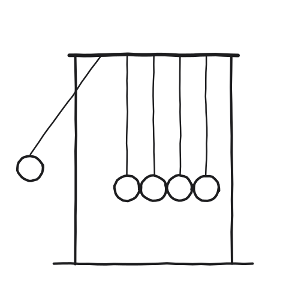
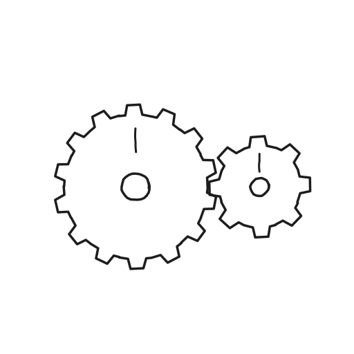

Limits · 5 complex drawings
Multi-object physics is still hard
Held-out judge score, 1–5.
The critic names the problem ("the right ball should swing out as the left one hits"), but two rounds of revision don't fix coordinated physics across several bodies.
intent Newton's cradle: the raised left ball swings down and strikes the row; the right ball swings out and back, and the exchange repeats while the middle balls stay nearly still.

newtons cradle
2.33 one-shot
2.33 loop
intent The two meshing gears turn in opposite directions; the small gear turns faster in proportion to its size, and the teeth stay meshed without passing through each other.

gears
4.00 one-shot
3.67 loop